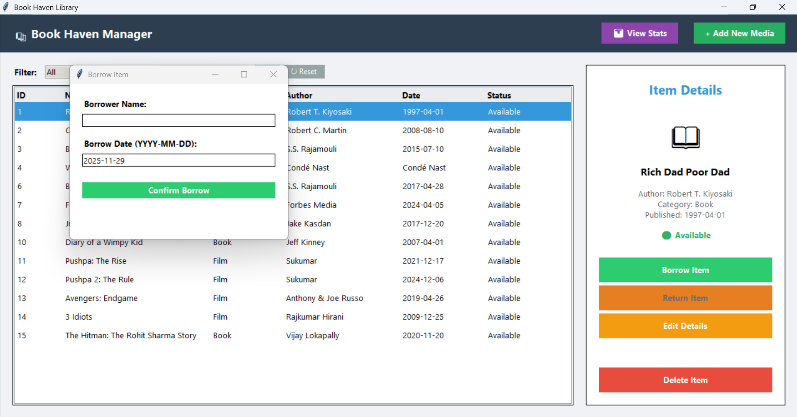
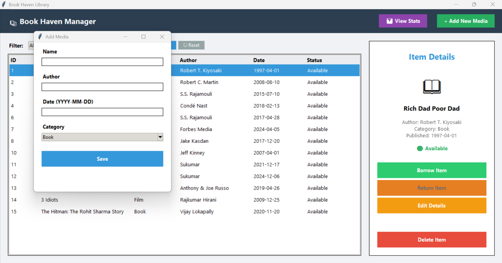

Key Functionalities

Smart Borrowing System
Allows librarians to check out media, store borrower info, and update the item state instantly.

Live Statistics
Shows total items, categories, and currently borrowed media using backend calculations.

Inventory Control
Add new media with validation checks for author, date, and category.
Installation Guide
- Install Python (3.10 or above).
- Install required libraries:
pip install flask requests
- Start the Flask backend:
python backend.py
- Run the Tkinter desktop app:
python app.py
API Documentation
GET /items
Returns all media items.
POST /add
Add a new item to the library.
PUT /borrow/<id>
Mark an item as borrowed and store borrower information.
PUT /return/<id>
Change the status back to available.
GET /stats
Return total items, categories and currently borrowed count.